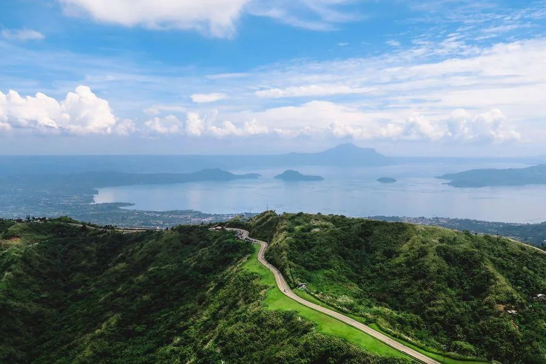

A vision shaped between two worlds
Shaped by family, grounded in gratitude, and built between Canada and the Philippines, Heal Before Home was born from a deeply personal journey.
It began with a father's final wish.
Forty-four years ago, in the midst of my father's terminal illness, a family already carrying the weight of profound loss made an unimaginable sacrifice. To fulfill his final wish for my future, I was adopted by my aunt and left the Philippines for Canada at just twelve years old.
That transition changed the course of my life. Looking back, I now understand it was one of the greatest expressions of my family's love, sacrifice and hope for my future. I remain deeply grateful to my father for his foresight, to my mother for her remarkable strength during an unimaginable time of loss, and to my aunt for making my father's final wish a reality.
While I built my life and career shaped by Canada's high standards, structured systems and institutional trust, the Philippines remained the foundation of who I am. Living between these two worlds gave me a unique perspective, one grounded in global standards while deeply connected to Filipino culture, hospitality and the instinct to care for others.
What stayed with me was something deeper.
Years later, I returned to the Philippines to explore business opportunities. But what stayed with me was something deeper: the country’s exceptional medical talent, remarkable hospitality, and deeply rooted culture of caring.
That realization became the catalyst for Heal Before Home.
Bridging clinical care, travel, hospitality and recovery.
Today, Heal Before Home bridges the space between clinical care, international travel, hospitality and recovery support. By bringing these elements together, we are helping reimagine medical travel in the Philippines around a more coordinated, thoughtful and human experience.

Giving back to the country that shaped me.
Part of our vision is to give back to the country that shaped my earliest years, by creating meaningful opportunities that support Filipino talent, responsible local businesses, healthier living and personal growth. Heal Before Home is also an opportunity to help more people experience the warmth, skill, hospitality and natural beauty of the Philippines in a thoughtful and responsible way.
Giving begins at the beginning.
We believe generosity should not be reserved for a future season of abundance.
From the beginning, Heal Before Home is being built with giving woven into how we operate, directing financial resources toward people, communities and initiatives that contribute to healthier, more sustainable lives in the Philippines.
As our network grows, we are committed to mobilizing individuals, professionals, creatives, businesses and partners to contribute their time, expertise and resources through thoughtfully coordinated community initiatives.
This commitment extends beyond our guests and into the communities we serve, with transparency and accountability guiding how resources are directed and the impact they create.

Healing leads you home.
Where care beyond treatment is designed around you.
With gratitude,
 Agnes Dalisay
Founder, Heal Before Home
Agnes Dalisay
Founder, Heal Before Home